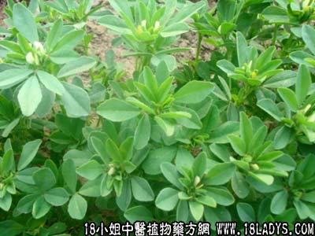

葫芦巴(中草药名称:芦巴子)(科目:豆科)

【中药概述】
葫芦巴为豆科草本植物胡芦巴的成熟种子。苦、温。归肝、肾经。温肾壮阳，逐除寒湿：用于肾阳不足而有寒湿之证，尤其善治沉寒冷积之痛证，如（<和剂局方>胡芦巴丸）。
【药效鉴别】
本品专入肾经，为“温养下焦，疏泄寒邪之药”。
【临证应用】
（<和剂局方>胡芦巴丸）。治大人小儿小肠气，疝气，偏坠阴肿，小腹有形如卵，上下来去痛不可忍，呕恶闷乱等。
【药理作用】
具有抗癌、杀虫、催乳等作用。
【化学成分】
含葫芦巴碱、胆碱、皂甙、脂肪油、蛋白质、粘液质、维生素B1等。
【用量用法】
3——10g，水煎服。
本文解释权归中药大全，本文地址： https://www.daquan.com/post/1778.html